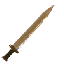
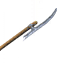
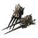
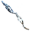
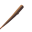
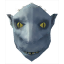
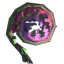

Waffen, Werkzeuge & Munition
Waffen, Werkzeuge & Munition in Valheim – 200 Gegenstände mit Biom, Fundort, benötigtem Werkzeug, Rezept und Verwendung.
Kein Gegenstand gefunden.
 Aasknochen-Reißklauen
Aasknochen-Reißklauen
Diese Klauen zerfetzen Fleisch und Knochen ohne Unterschied.
Herkunft
- Herstellen: Schmiede (Stufe 4) aus 2 ×
 Bärenfell, 2 ×
Bärenfell, 2 ×  Aasbären-Brustkorb, 2 ×
Aasbären-Brustkorb, 2 ×  Schwarzmetall, 4 ×
Schwarzmetall, 4 ×  Leinenzwirn · je Aufwertung: 1 × Bärenfell, 1 × Aasbären-Brustkorb, 1 × Schwarzmetall, 2 × Leinenzwirn
Leinenzwirn · je Aufwertung: 1 × Bärenfell, 1 × Aasbären-Brustkorb, 1 × Schwarzmetall, 2 × Leinenzwirn
 Abyssale Harpune
Abyssale Harpune
Der Zorn des Ozeans.
Herkunft
- Herstellen: Werkbank (Stufe 2) aus 8 ×
 Edelholz, 30 ×
Edelholz, 30 ×  Chitin, 3 ×
Chitin, 3 ×  Lederreste
Lederreste
 Abyssale Klinge
Abyssale Klinge
Ein Messer aus den Tiefen.
Herkunft
- Herstellen: Werkbank (Stufe 2) aus 4 × Edelholz, 20 × Chitin, 2 × Lederreste · je Aufwertung: 10 × Chitin
 Angelköder
Angelköder
Ein gewöhnlicher Dvergr-Fischköder. Die Angelrute wird separat verkauft.
Herkunft
- Kaufen: Haldor · 10 Münzen (× 20)
- Aufsammeln: Frosthöhle · 2–4 ×
Verwendung
 Angelrute
Angelrute
Eine standardisierte Dvergr-Angelrute.
Herkunft
- Kaufen: Haldor · 350 Münzen
- Aufsammeln: Frosthöhle
 Arbalest
Arbalest
Eine behäbige aber starke Waffe.
Herkunft
 Aschenzahn
Aschenzahn
Wieder aus der Asche auferstanden, ist dieser Bogen unnachgiebig stark.
Herkunft
- Herstellen: Schwarzschmiede (Stufe 3) aus 10 ×
 Aschenholz, 16 ×
Aschenholz, 16 ×  Verkohlter Knochen, 5 ×
Verkohlter Knochen, 5 ×  Flammenkern, 5 ×
Flammenkern, 5 ×  Knochenschlund-Zähne · je Aufwertung: 5 × Aschenholz, 10 × Verkohlter Knochen, 5 × Flammenkern, 5 × Knochenschlund-Zähne
Knochenschlund-Zähne · je Aufwertung: 5 × Aschenholz, 10 × Verkohlter Knochen, 5 × Flammenkern, 5 × Knochenschlund-Zähne
Verwendung
- Zutat für: Blutzahn, Sturmzahn, Wurzelzahn
 Basaltbombe
Basaltbombe
Wird bei ausreichender Hitze nach der Explosion fest.
Herkunft
- Herstellen: 5 × Werkbank aus 1 ×
 Asksvin-Haut, 1 ×
Asksvin-Haut, 1 ×  Asksvin-Blase, 3 ×
Asksvin-Blase, 3 ×  Proustitpulver
Proustitpulver
 Berserkir-Äxte
Berserkir-Äxte
Lass deiner Wut freien Lauf und stelle dich dem Gemetzel.
Herkunft
- Herstellen: Schwarzschmiede (Stufe 3) aus 15 × Verkohlter Knochen, 24 × Flammenkern, 3 × Asksvin-Haut · je Aufwertung: 15 × Flammenkern, 1 × Asksvin-Haut
Verwendung
 Blitzschlag
Blitzschlag
Zeige auf dein Ziel und beschwöre den Zorn des Himmels.
Herkunft
- Herstellen: Galdr-Tisch (Stufe 3) aus 10 ×
 Blutgold, 5 ×
Blutgold, 5 ×  Nornagarn, 1 ×
Nornagarn, 1 ×  Donnerblut-Essenz · je Aufwertung: 5 × Blutgold, 2 × Nornagarn, 1 × Donnerblut-Essenz
Donnerblut-Essenz · je Aufwertung: 5 × Blutgold, 2 × Nornagarn, 1 × Donnerblut-Essenz - Garen: Frost-Gießerei aus
 Guss: Blitzschlag
Guss: Blitzschlag
 Blutende Berserkir-Äxte
Blutende Berserkir-Äxte
Je näher du dem Tod stehst, desto schwerer ist es, dich zu treffen.
Herkunft
- Herstellen: Schwarzschmiede (Stufe 4) aus 1 × Berserkir-Äxte, 5 × Flammenkern, 1 ×
 Blutstein · je Aufwertung: 5 × Flammenkern, 1 × Blutstein
Blutstein · je Aufwertung: 5 × Flammenkern, 1 × Blutstein
 Blutender Nidhögg
Blutender Nidhögg
Wenn du blutest, werden deine Feinde dasselbe tun.
Herkunft
- Herstellen: Schwarzschmiede (Stufe 4) aus 1 ×
 Nidhögg, 6 × Flammenkern, 1 × Blutstein · je Aufwertung: 6 × Flammenkern, 1 × Blutstein
Nidhögg, 6 × Flammenkern, 1 × Blutstein · je Aufwertung: 6 × Flammenkern, 1 × Blutstein
 Blutender Splitnir
Blutender Splitnir
In jeder Schlacht musst du ein kleines Opfer bringen ...
Herkunft
- Herstellen: Schwarzschmiede (Stufe 4) aus 1 ×
 Splitnir, 6 × Flammenkern, 1 × Blutstein · je Aufwertung: 6 × Flammenkern, 1 × Blutstein
Splitnir, 6 × Flammenkern, 1 × Blutstein · je Aufwertung: 6 × Flammenkern, 1 × Blutstein
 Blutgold-Bolzen
Blutgold-Bolzen
Ein Bolzen, der aus den wohl härtesten Materialien der Welt geschmiedet wurde ...
Herkunft
- Herstellen: 20 × Schwarzschmiede aus 1 × Blutgold, 8 ×
 Zimmerholz, 2 ×
Zimmerholz, 2 ×  Federn
Federn
 Blutgold-Geschoss
Blutgold-Geschoss
Angreifer haben keine Chance, wenn dieses Geschoss sein Ziel findet.
Herkunft
- Herstellen: 20 × Handwerkstisch aus 10 × Zimmerholz, 1 × Blutgold
 Blutgold-Pfeil
Blutgold-Pfeil
Ein Pfeil, der aus den wohl härtesten Materialien der Welt geschmiedet wurde ...
Herkunft
- Herstellen: 20 × Schwarzschmiede aus 1 × Blutgold, 2 × Federn, 8 × Zimmerholz
 Blutprügel
Blutprügel
Dieser Streitkolben saugt das Blut fast in sich auf und verlangt immer nach mehr.
Herkunft
- Herstellen: Schwarzschmiede (Stufe 4) aus 1 ×
 Flammenkern-Streitkolben, 8 × Flammenkern, 1 × Blutstein · je Aufwertung: 8 × Flammenkern, 1 × Blutstein
Flammenkern-Streitkolben, 8 × Flammenkern, 1 × Blutstein · je Aufwertung: 8 × Flammenkern, 1 × Blutstein
 Blutzahn
Blutzahn
Pfeile, die mit diesem Bogen verschossen werden, zerreißen Fleisch mit unvergleichlicher Brutalität.
Herkunft
- Herstellen: Schwarzschmiede (Stufe 4) aus 1 × Aschenzahn, 5 × Flammenkern, 1 × Blutstein · je Aufwertung: 5 × Flammenkern, 1 × Blutstein
 Bogen
Bogen
Grober, aber zweckmäßiger Bogen.
Herkunft
- Herstellen: Werkbank aus 10 ×
 Holz, 8 × Lederreste · je Aufwertung: 5 × Holz, 4 × Lederreste, 1 ×
Holz, 8 × Lederreste · je Aufwertung: 5 × Holz, 4 × Lederreste, 1 ×  Hirschfell
Hirschfell
 Brennender Angelköder
Brennender Angelköder
Du bist genauso wenig gefeit gegen Todeskito-Bisse wie die Fische gegen diesen Snack!
Herkunft
- Herstellen: 20 × Essenszubereitungs-Tisch aus 20 × Angelköder, 1 ×
 Fuling-Trophäe
Fuling-Trophäe
Verwendung
- Köder für: Zackenbarsch
 Bronze-Atgeir
Bronze-Atgeir
Das Werkzeug eines wahren Kriegers.
Herkunft
- Herstellen: Schmiede aus 10 × Holz, 8 ×
 Bronze, 2 × Lederreste · je Aufwertung: 4 × Bronze
Bronze, 2 × Lederreste · je Aufwertung: 4 × Bronze
 Bronzeaxt
Bronzeaxt
Eine helle und polierte Klinge, die wie ein Lächeln gekrümmt ist.
Herkunft
- Herstellen: Schmiede aus 4 × Holz, 8 × Bronze, 2 × Lederreste · je Aufwertung: 4 × Bronze, 1 × Lederreste
 Bronzener Streitkolben
Bronzener Streitkolben
Eine Waffe, die für wahre Albträume sorgt.
Herkunft
- Herstellen: Schmiede aus 4 × Holz, 8 × Bronze, 3 × Lederreste · je Aufwertung: 4 × Bronze
 Bronzepfeil
Bronzepfeil
Schärfer als Feuerstein. Ein geschmeidiger Bote des Todes.
Herkunft

BronzeschwertEin blutdurstiger Freund.
Herkunft
- Herstellen: Schmiede aus 2 × Holz, 8 × Bronze, 2 × Lederreste · je Aufwertung: 1 × Holz, 4 × Bronze, 1 × Lederreste
 Bronzespeer
Bronzespeer
Ein stabiler Speer mit einer polierten Bronzespitze.
Herkunft
- Herstellen: Schmiede aus 5 × Holz, 6 × Bronze, 2 × Hirschfell · je Aufwertung: 3 × Holz, 4 × Bronze, 1 × Hirschfell
 Bronzespitzhacke
Bronzespitzhacke
Verbesserte Bronzespitzhacke. Kann auch sehr harte Felsen knacken.
Herkunft
 Brutaler Totschläger
Brutaler Totschläger
Wenn es blutet, kannst du es töten.
Herkunft
- Herstellen: Schwarzschmiede (Stufe 4) aus 1 ×
 Totschläger, 15 × Flammenkern, 1 × Blutstein · je Aufwertung: 15 × Flammenkern, 1 × Blutstein
Totschläger, 15 × Flammenkern, 1 × Blutstein · je Aufwertung: 15 × Flammenkern, 1 × Blutstein
 Chitin-Bolzen
Chitin-Bolzen
Ein schwerer und robuster Bolzen.
Herkunft
- Herstellen: 20 × Schwarzschmiede aus 2 ×
 Chitinpanzer, 8 × Holz, 2 × Federn
Chitinpanzer, 8 × Holz, 2 × Federn
 Chitin-Pfeil
Chitin-Pfeil
Schwer und spitz. Das wird wehtun.
Herkunft
- Herstellen: 20 × Schwarzschmiede aus 4 × Chitinpanzer, 2 × Federn, 8 × Holz
- Truhen: Fauliges Loch (Morgen) · 3–12 × · 46 % Chance
 Chitin-Speer
Chitin-Speer
Gezackter geht es nicht. Dieser Speer ist mehr als tödlich.
Herkunft
- Herstellen: Schwarzschmiede aus 10 ×
 Yggdrasil-Holz, 4 × Chitinpanzer, 2 ×
Yggdrasil-Holz, 4 × Chitinpanzer, 2 ×  Unterkiefer · je Aufwertung: 5 × Yggdrasil-Holz, 4 × Chitinpanzer, 1 × Unterkiefer
Unterkiefer · je Aufwertung: 5 × Yggdrasil-Holz, 4 × Chitinpanzer, 1 × Unterkiefer
 Donnerblut-Armbrust
Donnerblut-Armbrust
Der Bogen ist voll von angestauter Kraft, wie die Luft vor einem Blitzeinschlag.
Herkunft
- Herstellen: Schwarzschmiede (Stufe 4) aus 1 ×
 Nord-Armbrust, 20 × Blutgold, 1 × Donnerblut-Essenz · je Aufwertung: 10 × Blutgold, 1 × Donnerblut-Essenz
Nord-Armbrust, 20 × Blutgold, 1 × Donnerblut-Essenz · je Aufwertung: 10 × Blutgold, 1 × Donnerblut-Essenz
 Donnerblut-Atgeir
Donnerblut-Atgeir
Der Himmel lässt sein Lob erklingen, während du deine Feinde bluten lässt.
Herkunft
- Herstellen: Schwarzschmiede (Stufe 4) aus 1 ×
 Nord-Atgeir, 20 × Blutgold, 1 × Donnerblut-Essenz · je Aufwertung: 10 × Blutgold, 1 × Donnerblut-Essenz
Nord-Atgeir, 20 × Blutgold, 1 × Donnerblut-Essenz · je Aufwertung: 10 × Blutgold, 1 × Donnerblut-Essenz
 Donnerblut-Axt
Donnerblut-Axt
Wenn diese Axt gleichermaßen Holz und Blut durchtrennt, erklingt ein Donnerhall über das Land.
Herkunft
- Herstellen: Schwarzschmiede (Stufe 4) aus 1 ×
 Nord-Axt, 20 × Blutgold, 1 × Donnerblut-Essenz · je Aufwertung: 10 × Blutgold, 1 × Donnerblut-Essenz
Nord-Axt, 20 × Blutgold, 1 × Donnerblut-Essenz · je Aufwertung: 10 × Blutgold, 1 × Donnerblut-Essenz
 Donnerblut-Bogen
Donnerblut-Bogen
Blitze tanzen über die Sehne und warten darauf, entfesselt zu werden.
Herkunft
- Herstellen: Schwarzschmiede (Stufe 4) aus 1 ×
 Nord-Bogen, 20 × Blutgold, 1 × Donnerblut-Essenz · je Aufwertung: 10 × Blutgold, 1 × Donnerblut-Essenz
Nord-Bogen, 20 × Blutgold, 1 × Donnerblut-Essenz · je Aufwertung: 10 × Blutgold, 1 × Donnerblut-Essenz
 Donnerblut-Dolch
Donnerblut-Dolch
Die Klinge ist bereits blutbefleckt, und doch glitzert sie und sehnt sich nach mehr.
Herkunft
- Herstellen: Schwarzschmiede (Stufe 4) aus 1 ×
 Nord-Dolch, 20 × Blutgold, 1 × Donnerblut-Essenz · je Aufwertung: 10 × Blutgold, 1 × Donnerblut-Essenz
Nord-Dolch, 20 × Blutgold, 1 × Donnerblut-Essenz · je Aufwertung: 10 × Blutgold, 1 × Donnerblut-Essenz
 Donnerblut-Großaxt
Donnerblut-Großaxt
Du hackst deine Feinde entzwei, und ihr Blut wird singen wie ein Gewittersturm.
Herkunft
- Herstellen: Schwarzschmiede (Stufe 4) aus 1 ×
 Nord-Großaxt, 20 × Blutgold, 1 × Donnerblut-Essenz · je Aufwertung: 10 × Blutgold, 1 × Donnerblut-Essenz
Nord-Großaxt, 20 × Blutgold, 1 × Donnerblut-Essenz · je Aufwertung: 10 × Blutgold, 1 × Donnerblut-Essenz
 Donnerblut-Großschwert
Donnerblut-Großschwert
Der Träger dieser Waffe ist stets ein furchterregender Anblick.
Herkunft
- Herstellen: Schwarzschmiede (Stufe 4) aus 1 ×
 Nord-Großschwert, 20 × Blutgold, 1 × Donnerblut-Essenz · je Aufwertung: 10 × Blutgold, 1 × Donnerblut-Essenz
Nord-Großschwert, 20 × Blutgold, 1 × Donnerblut-Essenz · je Aufwertung: 10 × Blutgold, 1 × Donnerblut-Essenz
 Donnerblut-Hammer
Donnerblut-Hammer
Wenn diese Waffe auf ihr Ziel trifft, hallt der Schlag wie ein Echo durch die ganze Welt ...
Herkunft
- Herstellen: Schwarzschmiede (Stufe 4) aus 1 ×
 Nord-Hammer, 20 × Blutgold, 1 × Donnerblut-Essenz · je Aufwertung: 10 × Blutgold, 1 × Donnerblut-Essenz
Nord-Hammer, 20 × Blutgold, 1 × Donnerblut-Essenz · je Aufwertung: 10 × Blutgold, 1 × Donnerblut-Essenz
 Donnerblut-Knöchelketten
Donnerblut-Knöchelketten
Beim Kampf mit dieser Waffe wirst du vom Zorn übermannt, und dein Blut dröhnt wie Donner in deinen Ohren ... es erscheint angemessen.
Herkunft
- Herstellen: Schwarzschmiede (Stufe 4) aus 1 ×
 Nord-Knöchelketten, 20 × Blutgold, 1 × Donnerblut-Essenz · je Aufwertung: 10 × Blutgold, 1 × Donnerblut-Essenz
Nord-Knöchelketten, 20 × Blutgold, 1 × Donnerblut-Essenz · je Aufwertung: 10 × Blutgold, 1 × Donnerblut-Essenz
 Donnerblut-Schwert
Donnerblut-Schwert
Das Blut, das über die Klinge rinnt, erweckt den Sturm in ihrem Inneren.
Herkunft
- Herstellen: Schwarzschmiede (Stufe 4) aus 1 ×
 Nord-Schwert, 20 × Blutgold, 1 × Donnerblut-Essenz · je Aufwertung: 10 × Blutgold, 1 × Donnerblut-Essenz
Nord-Schwert, 20 × Blutgold, 1 × Donnerblut-Essenz · je Aufwertung: 10 × Blutgold, 1 × Donnerblut-Essenz
 Donnerblut-Speer
Donnerblut-Speer
Möge er einschlagen wie ein Blitz – schnell und heftig.
Herkunft
- Herstellen: Schwarzschmiede (Stufe 4) aus 1 ×
 Nord-Speer, 20 × Blutgold, 1 × Donnerblut-Essenz · je Aufwertung: 10 × Blutgold, 1 × Donnerblut-Essenz
Nord-Speer, 20 × Blutgold, 1 × Donnerblut-Essenz · je Aufwertung: 10 × Blutgold, 1 × Donnerblut-Essenz
 Donnerblut-Streitkolben
Donnerblut-Streitkolben
Eine Waffe, die es selbst mit der des Donnergottes selbst aufnehmen kann ...
Herkunft
- Herstellen: Schwarzschmiede (Stufe 4) aus 1 ×
 Nord-Streitkolben, 20 × Blutgold, 1 × Donnerblut-Essenz · je Aufwertung: 10 × Blutgold, 1 × Donnerblut-Essenz
Nord-Streitkolben, 20 × Blutgold, 1 × Donnerblut-Essenz · je Aufwertung: 10 × Blutgold, 1 × Donnerblut-Essenz
 Donnernde Berserkir-Äxte
Donnernde Berserkir-Äxte
Wenn du diese Äxte schwingst, veranstaltest du ein Blutbad, auf das selbst Thor stolz wäre.
Herkunft
- Herstellen: Schwarzschmiede (Stufe 4) aus 1 × Berserkir-Äxte, 5 × Flammenkern, 1 ×
 Iolith · je Aufwertung: 5 × Flammenkern, 1 × Iolith
Iolith · je Aufwertung: 5 × Flammenkern, 1 × Iolith
 Donnernder Nidhögg
Donnernder Nidhögg
Die Macht der Blitze tanzt über die Klinge dieses Schwerts und verspricht, Schmerzen zuzufügen.
Herkunft
- Herstellen: Schwarzschmiede (Stufe 4) aus 1 × Nidhögg, 6 × Flammenkern, 1 × Iolith · je Aufwertung: 6 × Flammenkern, 1 × Iolith
 Draugr-Fangzahn
Draugr-Fangzahn
Dunkelholz, das mit einer schimmernden Sehne bespannt wurde. Ein wahres Instrument des Todes.
Herkunft
- Herstellen: Schmiede (Stufe 2) aus 10 ×
 Uralte Rinde, 20 ×
Uralte Rinde, 20 ×  Silber, 2 × Hirschfell, 10 ×
Silber, 2 × Hirschfell, 10 ×  Glibber · je Aufwertung: 5 × Uralte Rinde, 10 × Silber, 2 × Hirschfell, 2 × Glibber
Glibber · je Aufwertung: 5 × Uralte Rinde, 10 × Silber, 2 × Hirschfell, 2 × Glibber
 Dundr
Dundr
Was als Nächstes kommt, wird dich schockieren.
Herkunft
- Herstellen: Galdr-Tisch (Stufe 2) aus 10 × Aschenholz, 4 × Flammenkern, 3 ×
 Himmelsfeder, 1 × Blutstein · je Aufwertung: 5 × Aschenholz, 2 × Flammenkern, 3 × Himmelsfeder, 1 × Blutstein
Himmelsfeder, 1 × Blutstein · je Aufwertung: 5 × Aschenholz, 2 × Flammenkern, 3 × Himmelsfeder, 1 × Blutstein
 Dvergr-Krug
Dvergr-Krug
Er fasst eine Menge Met!
Herkunft
- Truhen: Verseuchte Mine · 6,3 % Chance
- Aufsammeln: Dvergr-Wachturm, Dvergr-Leuchtturm, Die Königin
 Dvergr-Laterne
Dvergr-Laterne
Eine simple Fackel wäre einfach zu altmodisch.
Herkunft
- Herstellen: Schwarzschmiede aus 2 × Bronze, 1 ×
 Surtling-Kern, 1 ×
Surtling-Kern, 1 ×  Kristall
Kristall - Aufsammeln: Dvergr-Ausgrabung, Dvergr-Wachturm, Verkohlte Turmruine, Dvergr-Leuchtturm, Die Königin
Verwendung
- Baumaterial für: Dvergr-Laternenpfosten, Dvergr-Wall-Laterne
 Dyrnwyn
Dyrnwyn
Das zerbrochene Schwert ist wieder ganz. Seine Flammen lodern heiß, befeuert von der Erinnerung uralter Krieger.
Herkunft
- Herstellen: Schwarzschmiede (Stufe 4) aus 1 ×
 Fragment von Dyrnwyns Heft, 1 ×
Fragment von Dyrnwyns Heft, 1 ×  Fragment von Dyrnwyns Klinge, 1 ×
Fragment von Dyrnwyns Klinge, 1 ×  Fragment von Dyrnwyns Spitze, 20 × Flammenkern, 1 × Blutstein · je Aufwertung: 10 × Flammenkern, 1 × Blutstein
Fragment von Dyrnwyns Spitze, 20 × Flammenkern, 1 × Blutstein · je Aufwertung: 10 × Flammenkern, 1 × Blutstein
 Echo-Stachel
Echo-Stachel
Eine Kälte, die direkt bis in Mark und Bein fährt.
Herkunft
- Herstellen: Galdr-Tisch (Stufe 3) aus 10 × Blutgold, 4 × Nornagarn, 1 ×
 Frostfeuer-Essenz · je Aufwertung: 5 × Blutgold, 2 × Nornagarn, 1 × Frostfeuer-Essenz
Frostfeuer-Essenz · je Aufwertung: 5 × Blutgold, 2 × Nornagarn, 1 × Frostfeuer-Essenz - Garen: Frost-Gießerei aus
 Guss: Echo-Stachel
Guss: Echo-Stachel
 Edelholzbogen
Edelholzbogen
Ein einfacher Bogen aus starkem und geschmeidigem Holz.
Herkunft
- Herstellen: Werkbank aus 10 × Edelholz, 10 ×
 Kernholz, 2 × Hirschfell · je Aufwertung: 5 × Edelholz, 5 × Kernholz, 2 × Hirschfell
Kernholz, 2 × Hirschfell · je Aufwertung: 5 × Edelholz, 5 × Kernholz, 2 × Hirschfell

Eisen-AtgeirBluttrinker, Schädelzertrümmerer, Todesbringer.
Herkunft
- Herstellen: Schmiede (Stufe 2) aus 10 × Holz, 30 ×
 Eisen, 2 × Lederreste · je Aufwertung: 15 × Eisen, 1 × Lederreste
Eisen, 2 × Lederreste · je Aufwertung: 15 × Eisen, 1 × Lederreste
 Eisenaxt
Eisenaxt
Der scharfe Freund des Holzfällers.
Herkunft
- Herstellen: Schmiede (Stufe 2) aus 4 × Holz, 20 × Eisen, 2 × Lederreste · je Aufwertung: 10 × Eisen, 1 × Lederreste
 Eisenbolzen
Eisenbolzen
Ein robustes Eisengeschoss.
Herkunft
 Eisenhammer
Eisenhammer
Ein mächtiger Hammer, der eines Champions würdig ist.
Herkunft
- Herstellen: Schmiede (Stufe 2) aus 10 × Uralte Rinde, 30 × Eisen, 4 ×
 Ymir-Fleisch, 1 ×
Ymir-Fleisch, 1 ×  Elite Draugr-Trophäe · je Aufwertung: 2 × Uralte Rinde, 15 × Eisen, 2 × Ymir-Fleisch
Elite Draugr-Trophäe · je Aufwertung: 2 × Uralte Rinde, 15 × Eisen, 2 × Ymir-Fleisch
 Eisenpfeil
Eisenpfeil
Ein Pfeil aus Eisen, Holz und schwarzen Federn.
Herkunft
- Herstellen: 20 × Schmiede (Stufe 2) aus 8 × Holz, 1 × Eisen, 2 × Federn
- Truhen: Sumpfruine (Turm) · 10–15 × · 37 % Chance, Gräberfeld · 10–15 × · 37 % Chance, Versunkene Krypta · 10–15 × · 36 % Chance
 Eisenschwert
Eisenschwert
Ein eisernes Langschwert, das von einer langen Linie geziert ist.
Herkunft
- Herstellen: Schmiede (Stufe 2) aus 2 × Holz, 20 × Eisen, 3 × Lederreste · je Aufwertung: 1 × Holz, 10 × Eisen, 2 × Lederreste
 Eisenspitzhacke
Eisenspitzhacke
Ein stabiles Werkzeug aus gehärtetem Eisen.
Herkunft
 Eiserner Streitkolben
Eiserner Streitkolben
Ein faustgroßer Klumpen Eisen auf einem Holzschaft.
Herkunft
- Herstellen: Schmiede (Stufe 2) aus 4 × Holz, 20 × Eisen, 3 × Lederreste · je Aufwertung: 10 × Eisen
 Enterhaken
Enterhaken
Für den dramatischen Auftritt oder den schnellen Rückzug.
Herkunft
- Herstellen: Schwarzschmiede aus 10 × Yggdrasil-Holz, 10 ×
 Verfeinertes Eitr, 4 × Unterkiefer, 1 ×
Verfeinertes Eitr, 4 × Unterkiefer, 1 ×  Haken
Haken
 Fackel
Fackel
Spendet Wärme und Licht und kann auch als Waffe verwendet werden.
Herkunft
- Herstellen: ohne Werkbank aus 1 × Holz, 1 ×
 Harz
Harz - Truhen: Schiffssetzung (Grab) · 53 % Chance, Dorf des Nordens · 53 % Chance, Hütte (Norden) · 52 % Chance, Holzfällerlager · 52 % Chance, Kampfruine · 50 % Chance, Verlassenes Holzhaus · 28–36 % Chance, Verlassener Hof · 36 % Chance, Draugr-Dorf · 36 % Chance
 Feuerpfeil
Feuerpfeil
Dieser Pfeil verbrennt alles, was er durchbohrt.
Herkunft
- Herstellen: 20 × Werkbank (Stufe 2) aus 8 × Holz, 8 × Harz, 2 × Federn
- Truhen: Schiffssetzung (Grab) · 10–15 × · 39 % Chance
 Feuerstein-Messer
Feuerstein-Messer
Ein scharfes Messer aus Feuerstein.
Herkunft
- Herstellen: Werkbank aus 2 × Holz, 4 ×
 Feuerstein, 2 × Lederreste · je Aufwertung: 2 × Feuerstein
Feuerstein, 2 × Lederreste · je Aufwertung: 2 × Feuerstein
 Feuersteinaxt
Feuersteinaxt
Eine Axt, schärfer als Stein.
Herkunft
- Herstellen: Werkbank aus 4 × Holz, 6 × Feuerstein · je Aufwertung: 3 × Feuerstein, 2 × Lederreste
 Feuersteinpfeil
Feuersteinpfeil
Ein Jagdpfeil mit einer Spitze aus Feuerstein.
Herkunft
- Herstellen: 20 × Werkbank (Stufe 2) aus 8 × Holz, 2 × Feuerstein, 2 × Federn
- Truhen: Kampfruine · 10–20 × · 50 % Chance, Turmruine · 5–10 × · 48 % Chance, Ruine · 5–10 × · 48 % Chance, Sumpfhütte · 5–10 × · 48 % Chance, Versunkene Turmruine · 5–10 × · 48 % Chance, Trollhöhle · 5–10 × · 48 % Chance, Steinhaus-Ruine · 5–10 × · 48 % Chance, Grabkammer (Schwarzwald) · 5–10 × · 46 % Chance, Hildir-Quest: Schwelendes Grab · 5–10 × · 46 % Chance, Verlassenes Holzhaus · 10–20 × · 28–36 % Chance, Verlassener Hof · 10–20 × · 36 % Chance, Draugr-Dorf · 10–20 × · 36 % Chance
 Feuersteinspeer
Feuersteinspeer
Wenn dein Auge ein Ziel ausfindig macht, soll dein Arm der Überbringer deiner Botschaft sein.
Herkunft
- Herstellen: Werkbank aus 5 × Holz, 10 × Feuerstein, 2 × Lederreste · je Aufwertung: 3 × Holz, 5 × Feuerstein, 1 × Lederreste
 Flammenkern-Geschoss
Flammenkern-Geschoss
Dieses Geschoss wurde aus einem der härtesten Metalle Valheims geschmiedet und kann alle Feinde fernhalten.
Herkunft
- Herstellen: 20 × Handwerkstisch aus 10 × Aschenholz, 1 × Flammenkern
Flammenkern-Streitkolben
Dichter, mit Stacheln bewehrter Flammenkern. Perfekt, um Feinden den Schädel einzuschlagen.
Herkunft
- Herstellen: Schwarzschmiede (Stufe 3) aus 10 × Verkohlter Knochen, 15 × Flammenkern, 5 ×
 Schwefel, 3 × Asksvin-Haut · je Aufwertung: 5 × Verkohlter Knochen, 8 × Flammenkern, 3 × Schwefel, 2 × Asksvin-Haut
Schwefel, 3 × Asksvin-Haut · je Aufwertung: 5 × Verkohlter Knochen, 8 × Flammenkern, 3 × Schwefel, 2 × Asksvin-Haut
Verwendung
- Zutat für: Blutprügel, Klossen, Sturmstern

FleischreißerWenn Krallen bei Wölfen funktionieren, warum nicht auch bei Wikingern?
Herkunft
- Herstellen: Schmiede (Stufe 3) aus 10 ×
 Fenris-Haarschopf, 6 ×
Fenris-Haarschopf, 6 ×  Fenris-Klaue, 10 × Silber · je Aufwertung: 1 × Fenris-Haarschopf, 1 × Fenris-Klaue, 1 × Silber
Fenris-Klaue, 10 × Silber · je Aufwertung: 1 × Fenris-Haarschopf, 1 × Fenris-Klaue, 1 × Silber
 Frostfeuer-Armbrust
Frostfeuer-Armbrust
Wenn deine Feinde vor deiner gezückten Waffe nicht erstarren, werden sie das spätestens, wenn du getroffen hast.
Herkunft
- Herstellen: Schwarzschmiede (Stufe 4) aus 1 × Nord-Armbrust, 20 × Blutgold, 1 × Frostfeuer-Essenz · je Aufwertung: 10 × Blutgold, 1 × Frostfeuer-Essenz
 Frostfeuer-Atgeir
Frostfeuer-Atgeir
Die Flammen verschlingen, und das Eis beansprucht den Rest.
Herkunft
- Herstellen: Schwarzschmiede (Stufe 4) aus 1 × Nord-Atgeir, 20 × Blutgold, 1 × Frostfeuer-Essenz · je Aufwertung: 10 × Blutgold, 1 × Frostfeuer-Essenz
 Frostfeuer-Axt
Frostfeuer-Axt
Brenne alles nieder, oder lass alles in einem einzigen, gewaltigen Moment der Auslöschung gefrieren.
Herkunft
- Herstellen: Schwarzschmiede (Stufe 4) aus 1 × Nord-Axt, 20 × Blutgold, 1 × Frostfeuer-Essenz · je Aufwertung: 10 × Blutgold, 1 × Frostfeuer-Essenz
 Frostfeuer-Bogen
Frostfeuer-Bogen
Bewahre kühlen Kopf beim Ziehen und bündle deinen Zorn in deinen Pfeilen.
Herkunft
- Herstellen: Schwarzschmiede (Stufe 4) aus 1 × Nord-Bogen, 20 × Blutgold, 1 × Frostfeuer-Essenz · je Aufwertung: 10 × Blutgold, 1 × Frostfeuer-Essenz
 Frostfeuer-Dolch
Frostfeuer-Dolch
Der Schnitt dieser Klinge sticht wie Eis und brennt wie Feuer.
Herkunft
- Herstellen: Schwarzschmiede (Stufe 4) aus 1 × Nord-Dolch, 20 × Blutgold, 1 × Frostfeuer-Essenz · je Aufwertung: 10 × Blutgold, 1 × Frostfeuer-Essenz
 Frostfeuer-Großaxt
Frostfeuer-Großaxt
Spalte deine Feinde mit einem eisigen Inferno!
Herkunft
- Herstellen: Schwarzschmiede (Stufe 4) aus 1 × Nord-Großaxt, 20 × Blutgold, 1 × Frostfeuer-Essenz · je Aufwertung: 10 × Blutgold, 1 × Frostfeuer-Essenz
 Frostfeuer-Großschwert
Frostfeuer-Großschwert
Auf die Wahl zwischen einem feurigen oder eisigen Ende folgt die Antwort ganz einfach: Warum nicht beides gleichzeitig?
Herkunft
- Herstellen: Schwarzschmiede (Stufe 4) aus 1 × Nord-Großschwert, 20 × Blutgold, 1 × Frostfeuer-Essenz · je Aufwertung: 10 × Blutgold, 1 × Frostfeuer-Essenz
 Frostfeuer-Hammer
Frostfeuer-Hammer
Glühend kalt oder klirrend heiß?
Herkunft
- Herstellen: Schwarzschmiede (Stufe 4) aus 1 × Nord-Hammer, 20 × Blutgold, 1 × Frostfeuer-Essenz · je Aufwertung: 10 × Blutgold, 1 × Frostfeuer-Essenz
 Frostfeuer-Knöchelketten
Frostfeuer-Knöchelketten
Ein geringes Erfrierungsrisiko kann man nicht ausschließen.
Herkunft
- Herstellen: Schwarzschmiede (Stufe 4) aus 1 × Nord-Knöchelketten, 20 × Blutgold, 1 × Frostfeuer-Essenz · je Aufwertung: 10 × Blutgold, 1 × Frostfeuer-Essenz
 Frostfeuer-Schwert
Frostfeuer-Schwert
Flammen tanzen über die Klinge, aber sind sie heiß oder kalt?
Herkunft
- Herstellen: Schwarzschmiede (Stufe 4) aus 1 × Nord-Schwert, 20 × Blutgold, 1 × Frostfeuer-Essenz · je Aufwertung: 10 × Blutgold, 1 × Frostfeuer-Essenz
 Frostfeuer-Speer
Frostfeuer-Speer
In eisige Flammen getunkter Speer, der den sicheren Untergang bedeutet.
Herkunft
- Herstellen: Schwarzschmiede (Stufe 4) aus 1 × Nord-Speer, 20 × Blutgold, 1 × Frostfeuer-Essenz · je Aufwertung: 10 × Blutgold, 1 × Frostfeuer-Essenz
 Frostfeuer-Streitkolben
Frostfeuer-Streitkolben
Sind das von der Wucht des Einschlags erzeugte Funken oder Eissplitter?
Herkunft
- Herstellen: Schwarzschmiede (Stufe 4) aus 1 × Nord-Streitkolben, 20 × Blutgold, 1 × Frostfeuer-Essenz · je Aufwertung: 10 × Blutgold, 1 × Frostfeuer-Essenz
 Frostiger Angelköder
Frostiger Angelköder
Nicht besonders nahrhaft. Lediglich Fische, die daran gewöhnt sind, nur Eis zu essen, werden davon angelockt.
Herkunft
- Herstellen: 20 × Essenszubereitungs-Tisch aus 20 × Angelköder, 1 ×
 Drachen-Trophäe
Drachen-Trophäe
Verwendung
- Köder für: Nordlachs
 Frostner
Frostner
Die Toten fürchten das Silber. Erinnere sie daran, warum das so ist.
Herkunft
- Herstellen: Schmiede (Stufe 3) aus 10 × Uralte Rinde, 30 × Silber, 5 × Ymir-Fleisch, 5 ×
 Gefrorene Drüse · je Aufwertung: 15 × Silber
Gefrorene Drüse · je Aufwertung: 15 × Silber
 Frostpfeil
Frostpfeil
Ein Splitter durchdringenden Eises.
Herkunft
- Herstellen: 20 × Werkbank (Stufe 4) aus 8 × Holz, 4 ×
 Obsidian, 2 × Federn, 1 × Gefrorene Drüse
Obsidian, 2 × Federn, 1 × Gefrorene Drüse - Truhen: Verlassene Blockhütte · 5–10 × · 44 % Chance, Bergbrunnen · 5–10 × · 44 % Chance, Turmruine · 5–10 × · 44 % Chance
 Frühzeitliche Äxte
Frühzeitliche Äxte
Mächtige und alte Waffen aus einer Zeit, als die Welt noch jung und unvollständig war …
Herkunft
- Herstellen: Werkbank aus 4 × Holz, 1 ×
 Seltsamer Axtkopf, 1 × Geheimnisvoller Axtkopf · je Aufwertung: 2 × Holz, 2 × Lederreste
Seltsamer Axtkopf, 1 × Geheimnisvoller Axtkopf · je Aufwertung: 2 × Holz, 2 × Lederreste
 Gallensaftbombe
Gallensaftbombe
Mit Vorsicht verwenden.
Herkunft
- Herstellen: 3 × Werkbank aus 1 ×
 Harz, 1 ×
Harz, 1 ×  Gallenbeutel, 3 × Harz
Gallenbeutel, 3 × Harz
 Geisterrufer
Geisterrufer
Rufe außerweltliche Hilfe herbei. Es kostet nur einen Tropfen Blut ...
Herkunft
- Herstellen: Galdr-Tisch (Stufe 3) aus 8 ×

Gefrorener Ast, 5 ×Nornagarn, 1 ×  Elch-Trophäe · je Aufwertung: 4 × Gefrorener Ast, 2 × Nornagarn
Elch-Trophäe · je Aufwertung: 4 × Gefrorener Ast, 2 × Nornagarn - Garen: Frost-Gießerei aus
 Guss: Geisterrufer
Guss: Geisterrufer
 Geweihspitzhacke
Geweihspitzhacke
Mit diesem mächtigen Werkzeug können selbst die stärksten Felsen gebrochen werden.
Herkunft
- Herstellen: Werkbank aus 10 × Holz, 1 ×
 Hartes Geweih
Hartes Geweih
 Giftpfeil
Giftpfeil
Ein bitterer Stich aus der Ferne.
Herkunft
- Herstellen: 20 × Werkbank (Stufe 3) aus 8 × Holz, 4 × Obsidian, 2 × Federn, 2 ×
 Schlamm
Schlamm - Truhen: Sumpfruine (Turm) · 10–15 × · 37 % Chance, Gräberfeld · 10–15 × · 37 % Chance, Versunkene Krypta · 10–15 × · 36 % Chance
 Glutladung
Glutladung
Gefangene Glut, bereit zu bersten. Vorsichtig damit.
Herkunft
- Herstellen: 10 × Werkbank aus 2 ×
 Robbenpelz, 1 ×
Robbenpelz, 1 ×  Glut
Glut
 Hacke
Hacke
Werkzeug des Bauern, um den Boden zu ebnen.
Herkunft
 Hammer
Hammer
Ein hölzerner Hammer, der zum Bauen benötigt wird.
Herkunft
 Heißer Angelköder
Heißer Angelköder
Manche Fische fühlen sich bereits in warmen Gewässern wohl und dieser Köder bringt das Wasser fast zum Kochen.
Herkunft
- Herstellen: 20 × Essenszubereitungs-Tisch aus 20 × Angelköder, 1 ×
 Krieger-Trophäe
Krieger-Trophäe
Verwendung
- Köder für: Magmafisch
 Himmin afl
Himmin afl
Das ist zwar kein Hammer, aber selbst Thor würde an dieser Waffe Gefallen finden.
Herkunft
- Herstellen: Schwarzschmiede aus 10 × Yggdrasil-Holz, 15 × Verfeinertes Eitr, 5 × Silber, 2 × Unterkiefer · je Aufwertung: 15 × Verfeinertes Eitr, 5 × Silber, 2 × Unterkiefer
 Hirschbrecher
Hirschbrecher
Eine Waffe, die der Götter würdig ist! Wenn Du davon getroffen wirst, wirst Du es wissen …
Herkunft
- Herstellen: Werkbank (Stufe 2) aus 20 × Kernholz, 5 ×
 Hirsch-Trophäe, 2 × Lederreste · je Aufwertung: 5 × Kernholz, 2 × Hirsch-Trophäe, 1 × Lederreste, 10 ×
Hirsch-Trophäe, 2 × Lederreste · je Aufwertung: 5 × Kernholz, 2 × Hirsch-Trophäe, 1 × Lederreste, 10 ×  Knochenfragmente
Knochenfragmente
 Holz-Atgeir
Holz-Atgeir
Tut zwar nicht besonders weh, hat aber eine große Reichweite!
Herkunft
- Truhen: Fuling-Hütte · 17 % Chance, Steinturm (Berge) · 17 % Chance, Ruine · 17 % Chance, Hildir-Quest: Versiegelter Turm · 17 % Chance, Fuling-Dorf · 17 % Chance
 Holzaxt
Holzaxt
Es wäre seltsam, wenn diese Axt Holz hacken könnte, oder?
Herkunft
- Truhen: Schiffssetzung (Grab) · 8,7 % Chance
 Holzgeschoss
Holzgeschoss
Robuste Holzgeschosse, die eine solide Abwehr von Feinden ermöglichen.
Herkunft
 Holzgroßschwert
Holzgroßschwert
Könntest du damit bitte vorsichtig sein?
Herkunft
- Truhen: Dvergr-Wachturm (Ruine) · 14 % Chance, Felsnadel · 14 % Chance, Verseuchte Mine · 12 % Chance
 Holzhammer
Holzhammer
Sollte wahrscheinlich mehr wehtun, als es der Fall ist.
Herkunft
- Truhen: Sumpfruine (Turm) · 20 % Chance, Gräberfeld · 20 % Chance
 Holzmesser
Holzmesser
Manche Leute würden sagen, dieses Messer sei besser für Butter geeignet.
Herkunft
- Truhen: Schiffssetzung (Grab) · 8,7 % Chance
 Holzpfeil
Holzpfeil
Ein einfacher Pfeil, der sein Ziel sicher trifft.
Herkunft
- Herstellen: 20 × Werkbank aus 8 × Holz
 Holzschwert
Holzschwert
Größtenteils harmlos, es sei denn, du bist besonders hartnäckig.
Herkunft
 Holzspeer
Holzspeer
Genauso spitz wie ein echter Speer, wenn ein echter Speer aus Holz gemacht wäre.
Herkunft
- Truhen: Turmruine · 11 % Chance, Ruine · 11 % Chance, Sumpfhütte · 11 % Chance, Versunkene Turmruine · 11 % Chance, Trollhöhle · 11 % Chance, Steinhaus-Ruine · 11 % Chance
 Holzstreitaxt
Holzstreitaxt
Sieht bedrohlich aus, aber nicht so bedrohlich wie die echte Version.
Herkunft
- Truhen: Verlassene Blockhütte · 10 % Chance, Bergbrunnen · 10 % Chance, Turmruine · 10 % Chance
 Holzstreitkolben
Holzstreitkolben
Man fragt sich, warum jemand so etwas herstellen sollte, anstatt einfach einen Knüppel zu benutzen.
Herkunft
- Truhen: Draugr-Dorf · 1–4 × · 32 % Chance, Kampfruine · 6 % Chance
 Horn der Feierlichkeiten
Horn der Feierlichkeiten
Ein Jahr seit unserer Ankunft … Skål!
Herkunft
- Herstellen: Werkbank aus 2 × Bronze, 2 ×
 Trollleder, 2 × Eisen
Trollleder, 2 × Eisen
 Humpen
Humpen
Skål!
Herkunft
 Jägerbogen
Jägerbogen
Filigran gearbeitet und bespannt. Die Freude eines jeden Jägers.
Herkunft
- Herstellen: Schmiede aus 10 × Edelholz, 20 × Eisen, 10 × Federn, 2 × Hirschfell · je Aufwertung: 5 × Edelholz, 10 × Eisen, 5 × Federn, 2 × Hirschfell
 Jotun-Fluch
Jotun-Fluch
Nicht einmal die alten Riesen könnten dem giftigen Biss dieser Waffe standhalten.
Herkunft
- Herstellen: Schwarzschmiede aus 5 × Yggdrasil-Holz, 15 × Eisen, 3 × Gallenbeutel, 10 × Verfeinertes Eitr · je Aufwertung: 10 × Eisen, 1 × Gallenbeutel, 1 × Verfeinertes Eitr
 Kalter Angelköder
Kalter Angelköder
Dieser Köder scheint gewöhnlich, aber damit lassen sich Fische in kalten und dunklen Regionen anlocken.
Herkunft
- Herstellen: 20 × Essenszubereitungs-Tisch aus 20 × Angelköder, 1 ×
 Fenring-Trophäe
Fenring-Trophäe
Verwendung
- Köder für: Salmler

KeuleEine grobe, aber nützliche Waffe.
Herkunft
- Herstellen: ohne Werkbank aus 6 × Holz · je Aufwertung: 5 × Knochenfragmente
 Klebriger Angelköder
Klebriger Angelköder
Er mag übel riechen, aber Fische, die davon angezogen werden, sind schlimmeres gewohnt.
Herkunft
- Herstellen: 20 × Essenszubereitungs-Tisch aus 20 × Angelköder, 1 ×
 Monstrosität-Trophäe
Monstrosität-Trophäe
Verwendung
- Köder für: Riesenhering
 Klossen
Klossen
Wenn die Kraft deiner Schläge zu schwach ist, um deine Gegner zu Boden zu werfen, können die urweltlichen Wurzeln sie vielleicht festhalten.
Herkunft
- Herstellen: Schwarzschmiede (Stufe 4) aus 1 × Flammenkern-Streitkolben, 8 × Flammenkern, 1 ×
 Jade · je Aufwertung: 8 × Flammenkern, 1 × Jade
Jade · je Aufwertung: 8 × Flammenkern, 1 × Jade
 Klumpenbombe: Brei
Klumpenbombe: Brei
Im Dungeon findet man Klumpen.
Herkunft
- Herstellen: Werkbank aus 1 ×
 Verkorkte Phiole, 1 ×
Verkorkte Phiole, 1 ×  Brei-Trophäe, 3 ×
Brei-Trophäe, 3 ×  Toter Brei
Toter Brei
 Klumpenbombe: Elite-Gift
Klumpenbombe: Elite-Gift
Das Einatmen der Dämpfe ist nicht empfohlen.
Herkunft
- Herstellen: Werkbank aus 1 × Verkorkte Phiole, 3 ×
 Schleimling-Trophäe, 3 × Harz
Schleimling-Trophäe, 3 × Harz
 Klumpenbombe: Frost
Klumpenbombe: Frost
Wenn du sie zu lange in der Hand hältst, könnte sie daran festfrieren.
Herkunft
- Herstellen: Werkbank aus 1 × Verkorkte Phiole, 1 × Drachen-Trophäe, 3 × Harz
 Klumpenbombe: Gift
Klumpenbombe: Gift
Sollte diese Phiole zerbrechen, ist Vorsicht angebracht.
Herkunft
- Herstellen: Werkbank aus 1 × Verkorkte Phiole, 1 × Schleimling-Trophäe, 3 × Harz
 Klumpenbombe: Lava
Klumpenbombe: Lava
Die Phiole fühlt sich heiß an und verspricht feurige Zerstörung.
Herkunft
- Herstellen: Werkbank aus 1 × Verkorkte Phiole, 10 × Schwefel, 10 × Proustitpulver
 Klumpenbombe: Teer
Klumpenbombe: Teer
Die klebrige Substanz darin pulsiert bedrohlich.
Herkunft
- Herstellen: Werkbank aus 1 × Verkorkte Phiole, 1 ×
 Plagewuchs-Trophäe, 3 ×
Plagewuchs-Trophäe, 3 ×  Teer
Teer
 Knochenbolzen
Knochenbolzen
Ein rauer Bolzen aus vergilbtem Knochen.
Herkunft
- Herstellen: 20 × Schwarzschmiede aus 8 × Knochenfragmente, 2 × Federn
 Kristallkampfaxt
Kristallkampfaxt
Kristallklar und sehr scharf.
Herkunft
- Herstellen: Schmiede (Stufe 3) aus 40 × Uralte Rinde, 30 × Silber, 10 × Kristall · je Aufwertung: 5 × Uralte Rinde, 15 × Silber
 Krom
Krom
Tödlich wie glänzend. Und es ist sehr glänzend.
Herkunft
- Herstellen: Schwarzschmiede aus 30 × Eisen, 20 × Bronze, 5 ×
 Schuppenhaut · je Aufwertung: 15 × Eisen, 10 × Bronze, 5 × Schuppenhaut
Schuppenhaut · je Aufwertung: 15 × Eisen, 10 × Bronze, 5 × Schuppenhaut
 Kupfermesser
Kupfermesser
Ein scharfes Kupfermesser.
Herkunft
- Herstellen: Schmiede aus 2 × Holz, 8 ×
 Kupfer · je Aufwertung: 4 × Kupfer, 8 ×
Kupfer · je Aufwertung: 4 × Kupfer, 8 ×  Grauzwergen-Auge
Grauzwergen-Auge
 Metzgermesser
Metzgermesser
Ein Metzgermesser, das speziell fürs Zähmen von Tieren designt wurde.
Herkunft
 Moosiger Fischköder
Moosiger Fischköder
Tote Trolle im Wald locken oft ein oder zwei Fische an. Mit diesem Köder geht es schneller!
Herkunft
- Herstellen: 20 × Essenszubereitungs-Tisch aus 20 × Angelköder, 1 ×

Troll-Trophäe
Verwendung
- Köder für: Trollfisch
 Nadelpfeil
Nadelpfeil
Der letzte Stich.
Herkunft
 Nebel-Angelköder
Nebel-Angelköder
Ein Köder, den Fische auch in trüben Gewässern finden.
Herkunft
- Herstellen: 20 × Essenszubereitungs-Tisch aus 20 × Angelköder, 1 ×
 Lox-Trophäe
Lox-Trophäe
Verwendung
- Köder für: Kugelfisch, Seeteufel
 Nebelbrecher
Nebelbrecher
Das schwache Leuchten scheint den Nebel zu durchbohren.
Herkunft
- Herstellen: Schwarzschmiede aus 3 × Edelholz, 15 × Eisen, 10 × Verfeinertes Eitr, 3 × Irrlicht · je Aufwertung: 10 × Eisen, 5 × Verfeinertes Eitr, 1 × Irrlicht
Nidhögg
Das Schwert wurde nach dem bösartigen Drachen benannt, der unter den Wurzeln des Weltenbaums lebt. Es kündigt allen, die sich ihm in den Weg stellen, das Verderben an.
Herkunft
- Herstellen: Schwarzschmiede (Stufe 3) aus 3 × Verkohlter Knochen, 12 × Flammenkern, 2 × Asksvin-Haut · je Aufwertung: 10 × Flammenkern, 2 × Asksvin-Haut
Verwendung
- Zutat für: Blutender Nidhögg, Donnernder Nidhögg, Urweltlicher Nidhögg
Nord-Armbrust
Eine Waffe, die darauf wartet, ihre unglaubliche Wucht zu entfesseln.
Herkunft
- Herstellen: Schwarzschmiede (Stufe 4) aus 20 × Blutgold, 1 ×
 Gussform: Nord-Armbrust, 10 × Zimmerholz · je Aufwertung: 10 × Blutgold, 5 × Zimmerholz
Gussform: Nord-Armbrust, 10 × Zimmerholz · je Aufwertung: 10 × Blutgold, 5 × Zimmerholz - Garen: Frost-Gießerei aus
 Guss: Nord-Armbrust
Guss: Nord-Armbrust
Verwendung
- Zutat für: Donnerblut-Armbrust, Frostfeuer-Armbrust
Nord-Atgeir
Eine Waffe mit einer tödlich schimmernden Klinge.
Herkunft
- Herstellen: Schwarzschmiede (Stufe 4) aus 20 × Blutgold, 1 ×
 Gussform: Nord-Atgeir, 10 × Zimmerholz · je Aufwertung: 10 × Blutgold, 5 × Zimmerholz
Gussform: Nord-Atgeir, 10 × Zimmerholz · je Aufwertung: 10 × Blutgold, 5 × Zimmerholz - Garen: Frost-Gießerei aus
 Guss: Nord-Atgeir
Guss: Nord-Atgeir
Verwendung
- Zutat für: Donnerblut-Atgeir, Frostfeuer-Atgeir
Nord-Axt
Eine ausgesprochen detaillierte Axt für ausgesprochen präzises Spalten deiner Feinde.
Herkunft
- Herstellen: Schwarzschmiede (Stufe 4) aus 20 × Blutgold, 1 ×
 Gussform: Nord-Axt, 10 × Zimmerholz · je Aufwertung: 10 × Blutgold, 5 × Zimmerholz
Gussform: Nord-Axt, 10 × Zimmerholz · je Aufwertung: 10 × Blutgold, 5 × Zimmerholz - Garen: Frost-Gießerei aus
 Guss: Nord-Axt
Guss: Nord-Axt
Verwendung
- Zutat für: Donnerblut-Axt, Frostfeuer-Axt
Nord-Bogen
Dieser Bogen findet sein Ziel mit goldener Präzision.
Herkunft
- Herstellen: Schwarzschmiede (Stufe 4) aus 20 × Blutgold, 1 ×
 Gussform: Nord-Bogen, 10 × Zimmerholz · je Aufwertung: 10 × Blutgold, 5 × Zimmerholz
Gussform: Nord-Bogen, 10 × Zimmerholz · je Aufwertung: 10 × Blutgold, 5 × Zimmerholz - Garen: Frost-Gießerei aus
 Guss: Nord-Bogen
Guss: Nord-Bogen
Verwendung
- Zutat für: Donnerblut-Bogen, Frostfeuer-Bogen
Nord-Dolch
Ein goldener Blitz wird das Letzte sein, was deine Feinde sehen werden.
Herkunft
- Herstellen: Schwarzschmiede (Stufe 4) aus 20 × Blutgold, 1 ×
 Gussform: Nord-Dolch, 10 × Zimmerholz · je Aufwertung: 10 × Blutgold, 5 × Zimmerholz
Gussform: Nord-Dolch, 10 × Zimmerholz · je Aufwertung: 10 × Blutgold, 5 × Zimmerholz - Garen: Frost-Gießerei aus
 Guss: Nord-Dolch
Guss: Nord-Dolch
Verwendung
- Zutat für: Donnerblut-Dolch, Frostfeuer-Dolch
Nord-Großaxt
Eine mächtige Axt für einen mächtigen Krieger.
Herkunft
- Herstellen: Schwarzschmiede (Stufe 4) aus 20 × Blutgold, 1 ×
 Gussform: Nord-Großaxt, 10 × Zimmerholz · je Aufwertung: 10 × Blutgold, 5 × Zimmerholz
Gussform: Nord-Großaxt, 10 × Zimmerholz · je Aufwertung: 10 × Blutgold, 5 × Zimmerholz - Garen: Frost-Gießerei aus
 Guss: Nord-Großaxt
Guss: Nord-Großaxt
Verwendung
- Zutat für: Donnerblut-Großaxt, Frostfeuer-Großaxt
Nord-Großschwert
Eine markante und tödliche Waffe.
Herkunft
- Herstellen: Schwarzschmiede (Stufe 4) aus 20 × Blutgold, 1 ×
 Gussform: Nord-Großschwert, 2 × Gefrorener Ast · je Aufwertung: 10 × Blutgold, 1 × Gefrorener Ast
Gussform: Nord-Großschwert, 2 × Gefrorener Ast · je Aufwertung: 10 × Blutgold, 1 × Gefrorener Ast - Garen: Frost-Gießerei aus
 Guss: Nord-Großschwert
Guss: Nord-Großschwert
Verwendung
- Zutat für: Donnerblut-Großschwert, Frostfeuer-Großschwert
Nord-Hammer
Mit dieser Waffe werden deine Hiebe schwer wie die eines Trolls.
Herkunft
- Herstellen: Schwarzschmiede (Stufe 4) aus 20 × Blutgold, 1 ×
 Gussform: Nord-Hammer, 10 × Zimmerholz · je Aufwertung: 10 × Blutgold, 5 × Zimmerholz
Gussform: Nord-Hammer, 10 × Zimmerholz · je Aufwertung: 10 × Blutgold, 5 × Zimmerholz - Garen: Frost-Gießerei aus
 Guss: Nord-Hammer
Guss: Nord-Hammer
Verwendung
- Zutat für: Donnerblut-Hammer, Frostfeuer-Hammer
Nord-Knöchelketten
Wickle das härteste Metall um deine Fäuste, um sicherzustellen, dass deine Feinde die gesamte Wucht deiner Schläge zu spüren bekommen.
Herkunft
- Herstellen: Schwarzschmiede (Stufe 4) aus 20 × Blutgold, 1 ×
 Gussform: Nord-Knöchelketten, 10 × Zimmerholz · je Aufwertung: 10 × Blutgold, 5 × Zimmerholz
Gussform: Nord-Knöchelketten, 10 × Zimmerholz · je Aufwertung: 10 × Blutgold, 5 × Zimmerholz - Garen: Frost-Gießerei aus
 Guss: Nord-Knöchelketten
Guss: Nord-Knöchelketten
Verwendung
- Zutat für: Donnerblut-Knöchelketten, Frostfeuer-Knöchelketten
Nord-Schwert
Diese Waffe schimmert selbst im schwächsten Sonnenlicht.
Herkunft
- Herstellen: Schwarzschmiede (Stufe 4) aus 20 × Blutgold, 1 ×
 Gussform: Nord-Schwert, 10 × Zimmerholz · je Aufwertung: 10 × Blutgold, 5 × Zimmerholz
Gussform: Nord-Schwert, 10 × Zimmerholz · je Aufwertung: 10 × Blutgold, 5 × Zimmerholz - Garen: Frost-Gießerei aus
 Guss: Nord-Schwert
Guss: Nord-Schwert
Verwendung
- Zutat für: Donnerblut-Schwert, Frostfeuer-Schwert
Nord-Speer
Eine goldene Gelegenheit zum Angriff.
Herkunft
- Herstellen: Schwarzschmiede (Stufe 4) aus 20 × Blutgold, 1 ×
 Gussform: Nord-Speer, 10 × Zimmerholz · je Aufwertung: 10 × Blutgold, 5 × Zimmerholz
Gussform: Nord-Speer, 10 × Zimmerholz · je Aufwertung: 10 × Blutgold, 5 × Zimmerholz - Garen: Frost-Gießerei aus
 Guss: Nord-Speer
Guss: Nord-Speer
Verwendung
- Zutat für: Donnerblut-Speer, Frostfeuer-Speer
Nord-Streitkolben
Schnelle und schwere Hiebe, die deinen Feinden keine Zeit zur Erholung lassen.
Herkunft
- Herstellen: Schwarzschmiede (Stufe 4) aus 20 × Blutgold, 1 ×
 Gussform: Nord-Streitkolben, 10 × Zimmerholz · je Aufwertung: 10 × Blutgold, 5 × Zimmerholz
Gussform: Nord-Streitkolben, 10 × Zimmerholz · je Aufwertung: 10 × Blutgold, 5 × Zimmerholz - Garen: Frost-Gießerei aus
 Guss: Nord-Streitkolben
Guss: Nord-Streitkolben
Verwendung
- Zutat für: Donnerblut-Streitkolben, Frostfeuer-Streitkolben
 Obsidianpfeil
Obsidianpfeil
Ein Splitter Dunkelheit.
Herkunft
- Herstellen: 20 × Werkbank (Stufe 3) aus 8 × Holz, 4 × Obsidian, 2 × Federn
- Truhen: Stonehenge · 5–10 × · 62 % Chance
 Odins Met-Horn
Odins Met-Horn
Die besten Krieger Odins verdienen nur die erlesensten Getränke.
Herkunft
- Herstellen: Werkbank aus 4 × Edelholz, 1 × Hirsch-Trophäe, 2 × Harz
 Peitschender Totschläger
Peitschender Totschläger
Die launischen Blitze, die in dieser Klinge gebunden sind suchen ständig nach etwas, in das sie einschlagen können.
Herkunft
- Herstellen: Schwarzschmiede (Stufe 4) aus 1 × Totschläger, 15 × Flammenkern, 1 × Iolith · je Aufwertung: 15 × Flammenkern, 1 × Iolith
 Pflug
Pflug
Landwirtschaftliches Werkzeug zum Pflügen des Bodens.
Herkunft
 Rauchbombe
Rauchbombe
Jeder weiß, dass man den Rauch nicht einatmen darf.
Herkunft
- Herstellen: 10 × Werkbank aus 1 ×
 Rauchwölkchen, 1 × Asksvin-Blase
Rauchwölkchen, 1 × Asksvin-Blase
 Rückgratbrecher
Rückgratbrecher
Dieser Bogen bedeutet Knochenarbeitet, aber es lohnt sich.
Herkunft
- Herstellen: Schwarzschmiede aus 10 × Edelholz, 40 × Knochenfragmente, 10 × Verfeinertes Eitr · je Aufwertung: 5 × Edelholz, 20 × Knochenfragmente
 Schädelspaltur
Schädelspaltur
Findet selbst im dichtesten Nebel noch Schädel zum Spalten.
Herkunft
- Herstellen: Schwarzschmiede aus 30 × Eisen, 15 × Yggdrasil-Holz, 10 × Verfeinertes Eitr · je Aufwertung: 15 × Eisen, 5 × Yggdrasil-Holz
 Schleimbombe
Schleimbombe
Der Geruch ist unerträglich...
Herkunft
- Herstellen: 5 × Werkbank aus 5 × Lederreste, 5 × Schlamm, 3 × Harz
 Schneeball
Schneeball
Perfekt zum Werfen!
Herkunft
- Aufsammeln: Liegt am Boden bzw. wächst wild · Hoher Norden
- Beute von: Grauzwerg · Hoher Norden
- Herstellen: 10 × ohne Werkbank aus 5 ×
 Eis
Eis
Verwendung
- Baumaterial für: Schneelaterne
 Schneeschaufel
Schneeschaufel
Nützlich zum Beseitigen von Tiefschnee.
Herkunft
- Herstellen: Schwarzschmiede (Stufe 3) aus 5 × Edelholz, 4 × Flammenkern, 2 × Glut · je Aufwertung: 1 × Edelholz, 10 × Flammenkern
 Schwarzmetall-Atgeir
Schwarzmetall-Atgeir
Eine teuflische Axt zum Hauen, aus beinahe unzerstörbarem schwarzem Metall.
Herkunft
- Herstellen: Schmiede (Stufe 4) aus 10 × Edelholz, 30 × Schwarzmetall, 5 × Leinenzwirn · je Aufwertung: 15 × Schwarzmetall, 5 × Leinenzwirn
 Schwarzmetall-Axt
Schwarzmetall-Axt
Eine perfekt ausbalancierte Axt, die aus dunklem Material geschmiedet wurde. Besitzt einen smaragdfarbenen Glanz.
Herkunft
- Herstellen: Schmiede (Stufe 4) aus 6 × Edelholz, 20 × Schwarzmetall, 5 × Leinenzwirn · je Aufwertung: 10 × Schwarzmetall, 5 × Leinenzwirn
 Schwarzmetall-Bolzen
Schwarzmetall-Bolzen
Ein biegsamer Bolzen aus Schwarzmetall.
Herkunft
- Herstellen: 20 × Schwarzschmiede (Stufe 2) aus 2 × Schwarzmetall, 8 × Holz, 2 × Federn
 Schwarzmetall-Geschoss
Schwarzmetall-Geschoss
Diese massiven Geschosse durchbohren selbst die härteste Haut.
Herkunft
- Herstellen: 20 × Handwerkstisch aus 10 × Holz, 1 × Schwarzmetall
 Schwarzmetall-Messer
Schwarzmetall-Messer
Eine dunkle Klinge, scharf und stabil.
Herkunft
- Herstellen: Schmiede (Stufe 4) aus 4 × Edelholz, 10 × Schwarzmetall, 5 × Leinenzwirn · je Aufwertung: 4 × Schwarzmetall, 5 × Leinenzwirn
 Schwarzmetall-Schwert
Schwarzmetall-Schwert
Eine schöne Klinge, die an den Tod erinnert. Besitzt einen grünen Schimmer.
Herkunft
- Herstellen: Schmiede (Stufe 4) aus 2 × Edelholz, 20 × Schwarzmetall, 5 × Leinenzwirn · je Aufwertung: 10 × Schwarzmetall, 5 × Leinenzwirn
 Schwarzmetall-Spitzhacke
Schwarzmetall-Spitzhacke
Eine gute starke Hacke aus funkelndem Schwarzmetall.
Herkunft
- Herstellen: Schmiede (Stufe 2) aus 3 × Yggdrasil-Holz, 25 × Schwarzmetall · je Aufwertung: 1 × Yggdrasil-Holz, 15 × Schwarzmetall
 Schwarzmetall-Streitaxt
Schwarzmetall-Streitaxt
Grün ist das Letzte, was deine Feinde sehen werden, bevor sie entzwei gehackt werden.
Herkunft
- Herstellen: Schmiede (Stufe 4) aus 10 × Edelholz, 30 × Schwarzmetall, 5 × Leinenzwirn · je Aufwertung: 15 × Schwarzmetall, 5 × Leinenzwirn
 Sense
Sense
Mit dem richtigen Werkzeug geht die Arbeit nochmal so leicht von der Hand.
Herkunft
- Herstellen: Schmiede (Stufe 2) aus 1 ×
 Sensengriff, 6 × Silber · je Aufwertung: 5 × Silber
Sensengriff, 6 × Silber · je Aufwertung: 5 × Silber
 Serviertablett
Serviertablett
Decke den Tisch nach Belieben mit Essen und Trinken und beeindrucke deine Gäste mit einem Festmahl.
Herkunft
- Kaufen: Die Sumpfhexe · 140 Münzen
 Silbermesser
Silbermesser
Wild aussehendes Messer, das nach Schmerzen aussieht.
Herkunft
- Herstellen: Schmiede (Stufe 3) aus 2 × Holz, 10 × Silber, 3 × Lederreste, 2 × Eisen · je Aufwertung: 1 × Holz, 5 × Silber, 1 × Lederreste, 1 × Eisen
 Silberpfeil
Silberpfeil
Eine Nadel um ruhelose Geister zu besänftigen
Herkunft
 Silberschwert
Silberschwert
Nichts Unreines kann seine Berührung ertragen.
Herkunft
- Herstellen: Schmiede (Stufe 3) aus 2 × Holz, 40 × Silber, 3 × Lederreste, 5 × Eisen · je Aufwertung: 1 × Holz, 20 × Silber, 1 × Lederreste, 3 × Eisen
 Skoll und Hati
Skoll und Hati
Stich einmal zu für die, die dich verraten haben, und zweimal für die, die du hasst.
Herkunft
- Herstellen: Schwarzschmiede aus 4 × Edelholz, 10 × Eisen, 10 × Schwarzmetall · je Aufwertung: 4 × Eisen, 4 × Schwarzmetall
Splitnir
Spalte die Herzen deiner Feinde entzwei.
Herkunft
- Herstellen: Schwarzschmiede (Stufe 3) aus 10 × Aschenholz, 6 × Flammenkern, 2 × Asksvin-Haut, 3 × Knochenschlund-Zähne · je Aufwertung: 5 × Aschenholz, 6 × Flammenkern, 1 × Asksvin-Haut, 3 × Knochenschlund-Zähne
Verwendung
- Zutat für: Blutender Splitnir, Stürmender Splitnir, Urweltlicher Splitnir
 Stab der Glut
Stab der Glut
Verglichen mit diesem Stab wirkt die glühende Hitze Muspelheims wie ein milder Sommertag …
Herkunft
- Herstellen: Galdr-Tisch aus 20 × Yggdrasil-Holz, 4 × Surtling-Kern, 16 × Verfeinertes Eitr · je Aufwertung: 10 × Yggdrasil-Holz, 2 × Surtling-Kern, 8 × Verfeinertes Eitr
 Stab der Spaltung
Stab der Spaltung
Nur diejenigen mit Geduld und Konzentration können die wahre Macht dieses Stabs nutzen.
Herkunft
- Herstellen: Galdr-Tisch (Stufe 2) aus 15 × Verkohlter Knochen, 5 × Aschenholz, 8 × Proustitpulver · je Aufwertung: 5 × Verkohlter Knochen, 3 × Aschenholz, 1 × Proustitpulver
 Stab der Wildnis
Stab der Wildnis
Uralte Kräfte der Natur ruhen zusammengerollt in diesem Stab, bereit, entfesselt zu werden.
Herkunft
- Herstellen: Galdr-Tisch (Stufe 2) aus 15 × Aschenholz, 10 ×

Straußenfarn, 3 ×Himmelsfeder, 1 × Jade · je Aufwertung: 5 × Aschenholz, 2 × Straußenfarn, 3 × Himmelsfeder, 1 × Jade
 Stab des Eises
Stab des Eises
Ein Stab so kalt wie der dreijährige Winter, der das Ende aller Zeiten einläutet.
Herkunft
- Herstellen: Galdr-Tisch aus 20 × Yggdrasil-Holz, 4 × Gefrorene Drüse, 16 × Verfeinertes Eitr · je Aufwertung: 10 × Yggdrasil-Holz, 2 × Gefrorene Drüse, 8 × Verfeinertes Eitr
 Stab des Schutzes
Stab des Schutzes
Für eine kleine Blutopfergabe wird dem Anwender eine magische Schutzhülle verliehen.
Herkunft
- Herstellen: Galdr-Tisch aus 20 × Yggdrasil-Holz, 4 ×
 Blutklumpen, 16 × Verfeinertes Eitr · je Aufwertung: 10 × Yggdrasil-Holz, 2 × Blutklumpen, 8 × Verfeinertes Eitr
Blutklumpen, 16 × Verfeinertes Eitr · je Aufwertung: 10 × Yggdrasil-Holz, 2 × Blutklumpen, 8 × Verfeinertes Eitr
 Stachelschwein
Stachelschwein
Eine tödliche Waffe, die mit teuflischen Stacheln versehen ist.
Herkunft
 Steinaxt
Steinaxt
Eine einfache Axt um Bäume zu fällen.
Herkunft
 Stinkender Angelköder
Stinkender Angelköder
Dieser Köder stinkt so penetrant, dass er selbst die Fische am Grund des Meeres erreicht.
Herkunft
- Herstellen: 20 × Essenszubereitungs-Tisch aus 20 × Angelköder, 1 ×
 Seeschlangen-Trophäe
Seeschlangen-Trophäe
Verwendung
- Köder für: Korallenbarsch, Thunfisch
 Streitaxt
Streitaxt
Perfekt zum Zertrümmern von Schädeln. Die Freude eines jeden Kriegers.
Herkunft
- Herstellen: Schmiede (Stufe 2) aus 30 × Uralte Rinde, 35 × Eisen, 4 × Lederreste · je Aufwertung: 5 × Uralte Rinde, 15 × Eisen
 Sturm-Zerreißer
Sturm-Zerreißer
Die Bolzen schießen durch deine Feinde wie eine besonders üble Windböe.
Herkunft
- Herstellen: Schwarzschmiede (Stufe 4) aus 1 ×
 Zerreißer, 8 × Flammenkern, 1 × Iolith · je Aufwertung: 8 × Flammenkern, 1 × Iolith
Zerreißer, 8 × Flammenkern, 1 × Iolith · je Aufwertung: 8 × Flammenkern, 1 × Iolith
 Stürmender Splitnir
Stürmender Splitnir
Möge der Donnerschlag die Luft zerreißen.
Herkunft
- Herstellen: Schwarzschmiede (Stufe 4) aus 1 × Splitnir, 6 × Flammenkern, 1 × Iolith · je Aufwertung: 6 × Flammenkern, 1 × Iolith
 Sturmstern
Sturmstern
Besonders effektiv in bewölkten Morgenstunden.
Herkunft
- Herstellen: Schwarzschmiede (Stufe 4) aus 1 × Flammenkern-Streitkolben, 8 × Flammenkern, 1 × Iolith · je Aufwertung: 8 × Flammenkern, 1 × Iolith
 Sturmzahn
Sturmzahn
Deine Pfeile fliegen so schnell wie Blitzschläge.
Herkunft
- Herstellen: Schwarzschmiede (Stufe 4) aus 1 × Aschenzahn, 5 × Flammenkern, 1 × Iolith · je Aufwertung: 5 × Flammenkern, 1 × Iolith
 Tatzen des Bären
Tatzen des Bären
Zum Zerreißen und Zerfetzen gemacht.
Herkunft
- Herstellen: Werkbank (Stufe 2) aus 2 × Bärenfell, 2 ×
 Bärentatze, 4 × Lederreste · je Aufwertung: 2 × Bärenfell, 2 × Lederreste
Bärentatze, 4 × Lederreste · je Aufwertung: 2 × Bärenfell, 2 × Lederreste
 Totenbeschwörer
Totenbeschwörer
Opfere ein wenig Blut, um die Toten zu erwecken. Werte den Schädel auf, um mehrere Skelette zu beschwören. Verbessere deine Blutmagie, um sie zu verstärken.
Herkunft
- Herstellen: Galdr-Tisch aus 10 × Knochenfragmente, 16 × Verfeinertes Eitr, 4 ×
 Skelett-Trophäe · je Aufwertung: 5 × Knochenfragmente, 8 × Verfeinertes Eitr, 2 × Skelett-Trophäe
Skelett-Trophäe · je Aufwertung: 5 × Knochenfragmente, 8 × Verfeinertes Eitr, 2 × Skelett-Trophäe
Totschläger
Diese mächtige Klinge dürstet nach dem Blut von Feinden.
Herkunft
- Herstellen: Schwarzschmiede (Stufe 3) aus 30 × Flammenkern, 5 × Asksvin-Haut, 3 ×
 Morgensehne · je Aufwertung: 15 × Flammenkern, 5 × Asksvin-Haut, 3 × Morgensehne
Morgensehne · je Aufwertung: 15 × Flammenkern, 5 × Asksvin-Haut, 3 × Morgensehne
Verwendung
 Trollstab
Trollstab
Ruft eine wütende Bestie herbei, die Tod und Zerstörung verursacht.
Herkunft
- Herstellen: Galdr-Tisch (Stufe 2) aus 15 × Verkohlter Knochen, 1 × Troll-Trophäe, 3 × Flammenkern, 1 × Blutstein · je Aufwertung: 5 × Verkohlter Knochen, 1 × Troll-Trophäe, 3 × Flammenkern, 1 × Blutstein
 Uralter Rindenspeer
Uralter Rindenspeer
Trotz seines knorrigen Äußeren ist dieser Speer äußerst mächtig und perfekt ausbalanciert.
Herkunft
- Herstellen: Schmiede (Stufe 3) aus 4 × Trollleder, 10 × Eisen, 10 × Uralte Rinde · je Aufwertung: 1 × Trollleder, 5 × Eisen, 5 × Uralte Rinde
 Urweltliche Berserkir-Äxte
Urweltliche Berserkir-Äxte
Deine Urinstinkte erwachen und die Natur um dich herum bietet dir ihre Unterstützung.
Herkunft
- Herstellen: Schwarzschmiede (Stufe 4) aus 1 × Berserkir-Äxte, 5 × Flammenkern, 1 × Jade · je Aufwertung: 5 × Flammenkern, 1 × Jade
 Urweltlicher Nidhögg
Urweltlicher Nidhögg
Wickle deine Feinde in Wurzeln, wie der Name dieser Klinge schon sagt.
Herkunft
- Herstellen: Schwarzschmiede (Stufe 4) aus 1 × Nidhögg, 6 × Flammenkern, 1 × Jade · je Aufwertung: 6 × Flammenkern, 1 × Jade
 Urweltlicher Splitnir
Urweltlicher Splitnir
Die Kräfte der Natur brechen aus dem Boden hervor, wenn dieser Speer zustößt.
Herkunft
- Herstellen: Schwarzschmiede (Stufe 4) aus 1 × Splitnir, 6 × Flammenkern, 1 × Jade · je Aufwertung: 6 × Flammenkern, 1 × Jade
 Urweltlicher Totschläger
Urweltlicher Totschläger
Die Klinge arbeitet mit urweltlichen Kräften zusammen und ist stets auf der Suche nach Tod und Gemetzel.
Herkunft
- Herstellen: Schwarzschmiede (Stufe 4) aus 1 × Totschläger, 15 × Flammenkern, 1 × Jade · je Aufwertung: 15 × Flammenkern, 1 × Jade
 Vergeltung des Nordens
Vergeltung des Nordens
Eine Schneeflocke im Käfig. Aus dem Inneren wirbeln endlose Muster hervor ...
Herkunft
- Herstellen: Galdr-Tisch (Stufe 3) aus 10 × Eis, 5 × Nornagarn, 1 ×
 Hexen-Trophäe · je Aufwertung: 5 × Eis, 2 × Nornagarn
Hexen-Trophäe · je Aufwertung: 5 × Eis, 2 × Nornagarn - Garen: Frost-Gießerei aus
 Guss: Vergeltung des Nordens
Guss: Vergeltung des Nordens
 Verkohlter Bolzen
Verkohlter Bolzen
Ein robuster Knochen aus einem Oberarm, aus dem ein tödlicher Bolzen geschnitzt wurde.
Herkunft
- Herstellen: 20 × Schwarzschmiede aus 2 × Verkohlter Knochen, 8 × Aschenholz, 2 × Federn
- Truhen: Schiffssetzung (Grab) · 5–11 × · 53 % Chance, Dorf des Nordens · 5–11 × · 53 % Chance, Hütte (Norden) · 5–11 × · 52 % Chance, Holzfällerlager · 5–11 × · 52 % Chance, Schiffswrack (Norden) · 3–13 × · 17 % Chance
 Verkohlter Pfeil
Verkohlter Pfeil
Der Pfeil wurde aus einem verkohlten Oberschenkelknochen geschnitzt, und er ist hart wie Metall.
Herkunft
- Herstellen: 20 × Schwarzschmiede aus 4 × Verkohlter Knochen, 2 × Federn, 8 × Aschenholz
- Truhen: Schiffssetzung (Grab) · 5–11 × · 53 % Chance, Dorf des Nordens · 5–11 × · 53 % Chance, Hütte (Norden) · 5–11 × · 52 % Chance, Holzfällerlager · 5–11 × · 52 % Chance, Mörk Borg · 5–11 × · 48 % Chance, Schiffswrack (Norden) · 3–13 × · 17 % Chance
 Wolfszahnspeer
Wolfszahnspeer
Sogar tot lechzt der Wolfszahn nach Blut.
Herkunft
- Herstellen: Schmiede (Stufe 3) aus 10 × Uralte Rinde, 4 ×
 Wolfszahn, 2 × Lederreste, 2 × Silber · je Aufwertung: 5 × Uralte Rinde, 2 × Wolfszahn, 1 × Lederreste, 1 × Silber
Wolfszahn, 2 × Lederreste, 2 × Silber · je Aufwertung: 5 × Uralte Rinde, 2 × Wolfszahn, 1 × Lederreste, 1 × Silber
 Wunden-Zerreißer
Wunden-Zerreißer
Bereit, deine Feinde in Stücke zu reißen.
Herkunft
- Herstellen: Schwarzschmiede (Stufe 4) aus 1 × Zerreißer, 8 × Flammenkern, 1 × Blutstein · je Aufwertung: 8 × Flammenkern, 1 × Blutstein
 Wunderkerze
Wunderkerze
Es ist ein Stock, der funkelt. Sehr hübsch!
Herkunft
- Kaufen: Hildir · 150 Münzen
 Wurzel-Zerreißer
Wurzel-Zerreißer
Wenn der Bolzen den Feind nicht am Boden festnagelt, erledigen das die Wurzeln, die aus dem Boden schießen.
Herkunft
- Herstellen: Schwarzschmiede (Stufe 4) aus 1 × Zerreißer, 8 × Flammenkern, 1 × Jade · je Aufwertung: 8 × Flammenkern, 1 × Jade
 Wurzelzahn
Wurzelzahn
Wie ein gewundener Ast zur Sonne strebt, strebt dieser Bogen zum Gemetzel.
Herkunft
- Herstellen: Schwarzschmiede (Stufe 4) aus 1 × Aschenzahn, 5 × Flammenkern, 1 × Jade · je Aufwertung: 5 × Flammenkern, 1 × Jade
Zerreißer
Zerreißt deine Feinde, ganz einfach.
Herkunft
- Herstellen: Schwarzschmiede (Stufe 3) aus 10 × Aschenholz, 8 × Flammenkern, 2 × Morgensehne, 4 × Knochenschlund-Zähne · je Aufwertung: 5 × Aschenholz, 4 × Flammenkern, 1 × Morgensehne, 4 × Knochenschlund-Zähne
Verwendung
- Zutat für: Sturm-Zerreißer, Wunden-Zerreißer, Wurzel-Zerreißer
 Zerstörer
Zerstörer
Diesen mächtigen Hammer dürstet es nach Unheil.
Herkunft
- Herstellen: Schwarzschmiede aus 10 × Yggdrasil-Holz, 20 × Eisen, 10 × Verfeinertes Eitr · je Aufwertung: 2 × Yggdrasil-Holz, 15 × Eisen, 2 × Verfeinertes Eitr